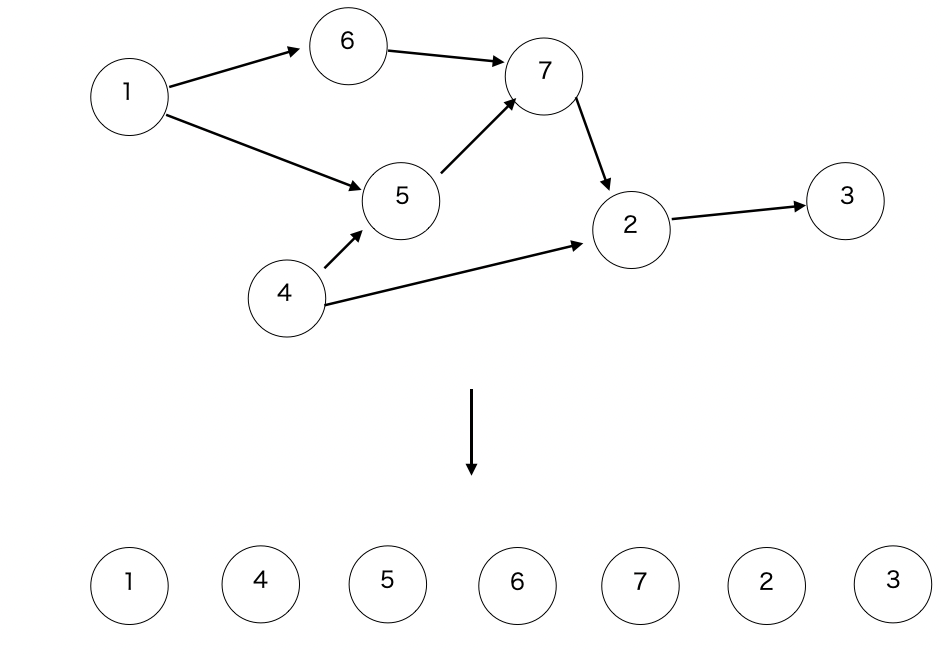

前のページ
閉路のない有向グラフGがあったとします。
Gのトポロジカルソートとは、
比較(トポロジカル順) : Gの頂点 u , v について、 u から v に到達可能ならば u は v より前の位置に、到達不可能な場合は u , v の順番は自由に
という比較のもと、Gの頂点達を並べることです。
ただし、トポロジカルソートした数列で、u が v より前に現れても、必ずしもグラフ上で u から v に到達可能ではないです

このソートがどういう時に役に立つかというと、例えばグラフ上で帰りがけ順で探索したい時に、トポロジカルソート順に並んだ頂点を反対側から見ていけば良いです。
実装も簡単で、頂点 x に入ってくる辺の本数をindegree[x]とし、トポロジカル順で頂点を並べる数列をAとします。
ここで、以下の手順を繰り返します。
最初のみやること : indegree[x] = 0 となる頂点をすべて queue に入れる。
手順 : queueから頂点を一つ取り出しAの末尾に追加する。その後、その頂点から出る辺を辿った先の頂点xに対して、indegree[x]を-1する。そうしてindegree[x]=0となれば、queueにxを追加する。
この手順の繰り返しでソート可能な理由を以下に書きます。
まず、indegree[x] = 0のとき、
indegree[x]が0になっている時点で、xに入ってくる辺はすべて見ていることになるので、xに直接つながる頂点はすべて数列Aに既に追加されています。
また、xに直接つながる有向辺を (s -> x) とすると、sに入ってくる辺はすべて見ているので、結局xにつながるpathはすべて見ていることになります。
よって、indegree[x] = 0なら無条件でqueue(実装によっては数列Aの末尾)に追加してもよいとわかります。
逆に、indegree[x] > 0ならば、見ていないpathが残っているので、まだ数列に追加することはできません。
また、このアルゴリズムは辺をすべて調べているので、操作が終了した後でindegree[x] > 0であるような頂点は存在しません。
また、実装において多重辺がある場合には注意してください。indegreeが余計に引かれてしまうので、多重辺は1つの辺として考えなければなりません。
以下はコード例で、verifyはこちらです。
- //include
- //------------------------------------------
- #include<iostream>
- #include<vector>
- #include<queue>
- #include<map>
- using namespace std;
- const long long INF = 1e18;
- int main(){
- priority_queue<int , vector<int> , greater<int> > pq;
- int n , m ;cin >> n >> m;
- vector<vector<int> > G(n);
- vector<int> indegree(n,0);
- vector<map<int , int> > is_used(n);
- for(int i = 0 ; i < m ; i++){
- int a, b;cin >> a >> b;
- a--;//0-indexに直してる
- b--;
- if(is_used[b][a] != 0)continue;
- G[a].push_back(b);
- indegree[b]++;//入ってくる辺の本数
- is_used[b][a] = 1;
- }
- vector<int> A(n);
- size_t index_now = 0;
- for(int x = 0; x < n ; x++){
- if(indegree[x]==0){
- pq.push(x);
- }
- }
- if(pq.empty()){
- //初期段階でindegree = 0 の頂点が無いならば、ループが存在する(閉路がある)のでダメ。
- cout << -1 << endl;
- return 0;
- }
- while(pq.empty()==false){
- int x = pq.top();
- pq.pop();
- A[index_now] = x;
- index_now++;
- for(int next : G[x]){
- if(indegree[next] == 0){
- //閉路があったらダメ
- cout << -1 << endl;
- return 0;
- }
- indegree[next]--;
- if(indegree[next] == 0){
- pq.push(next);
- }
- }
- }
- if(index_now<n){
- //Aに追加されていない頂点が残っている。(indegree >0 となる頂点があるかどうかでも判定可能)
- cout << -1 << endl;
- return 0;
- }
- for(int x : A){
- //1-indexに直しましょう
- cout << x+1 << " ";
- }
- cout << endl;
- return 0;
- }